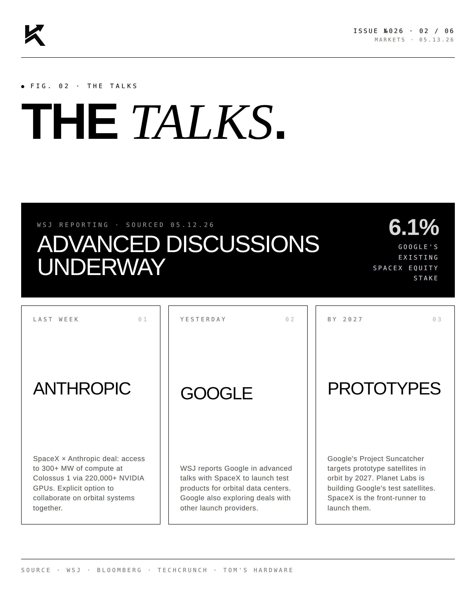
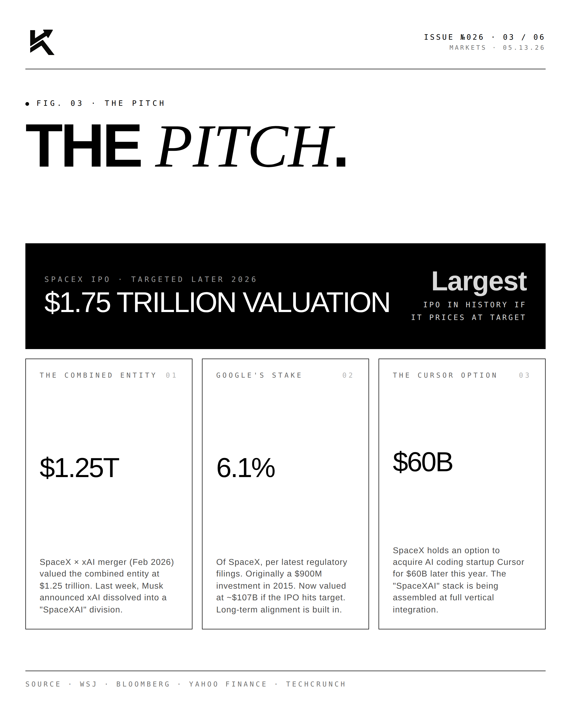
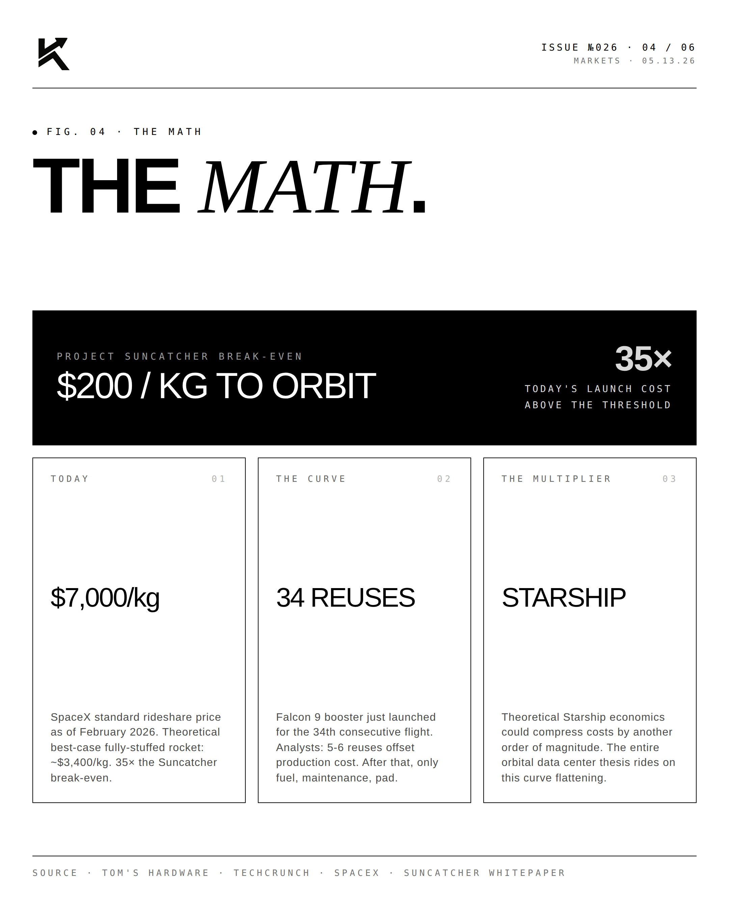
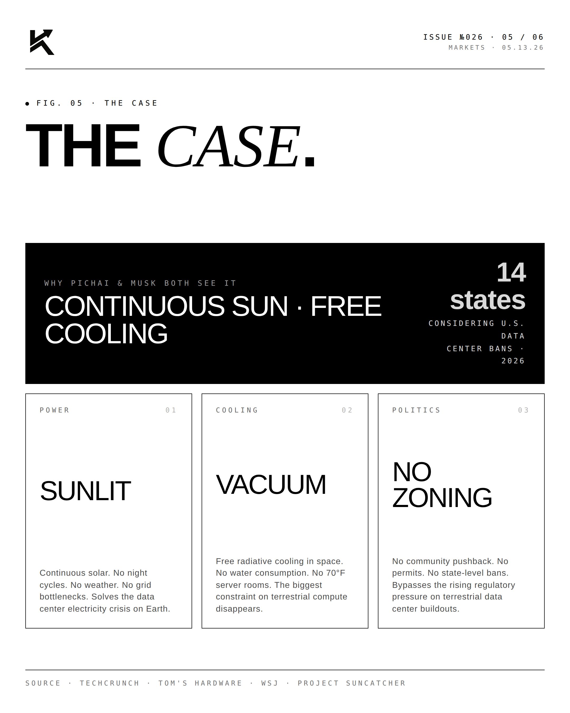
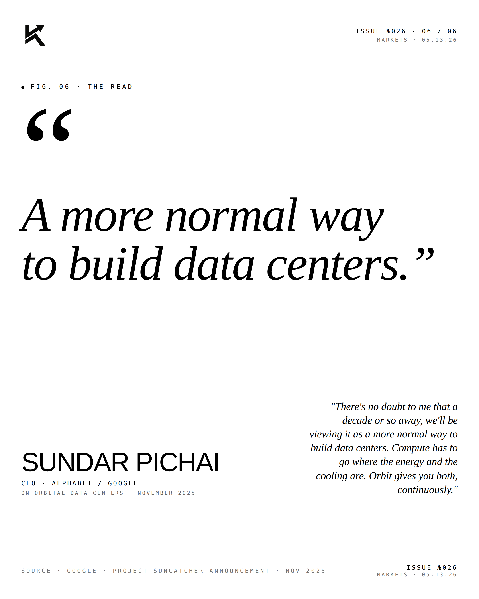

Orbit.
WSJ broke yesterday: Google & SpaceX in advanced talks to launch orbital data centers. SpaceX filed for 1 million satellites. The pitch ahead of a $1.75T IPO. Compute is leaving Earth.

The Talks.
WSJ reported May 12 that Google is in advanced discussions with SpaceX to launch test products for orbital data centers — Google's "Project Suncatcher" initiative announced in November 2025. SpaceX filed an FCC application in January 2026 for up to one million satellites authorizing orbital data center deployment. Prototype satellites are targeted for 2027, with Planet Labs building the test hardware. The talks come on the heels of last week's SpaceX × Anthropic deal: access to 300+ MW of compute via 220,000+ NVIDIA GPUs at Colossus 1 in Memphis, with explicit option to collaborate on orbital systems.

The Pitch.
SpaceX is targeting a $1.75 trillion valuation IPO later in 2026 — the largest in history if it prices at target. The combined SpaceX × xAI entity (merged February 2026) was valued at $1.25T. Google already owns 6.1% of SpaceX from a $900M investment in 2015 — now worth ~$107B at the IPO target. SpaceX also holds an option to acquire AI coding startup Cursor for $60B. The vertical stack is being assembled at full integration.

The Math.
Project Suncatcher's break-even economics need ~$200/kg to orbit. SpaceX's current rideshare price: $7,000/kg — roughly 35× the threshold. Falcon 9 just launched its 34th consecutive reuse, and analysts estimate that 5-6 reuses offset production cost. The Starship economics could theoretically compress launch costs another order of magnitude. The entire orbital data center thesis rides on this curve continuing to flatten.

The Case.
Why both Pichai and Musk see the same future: continuous solar power (no night cycles, no weather, no grid bottlenecks), free vacuum cooling (no water consumption, no 70°F server room constraint), and no zoning fights (bypassing the 14 U.S. states currently considering data center bans). The biggest constraints on terrestrial compute disappear in orbit — IF launch costs collapse.
"A more normal way
to build data centers."SUNDAR PICHAICEO · Alphabet / Google · November 2025
Pichai at Project Suncatcher's November 2025 announcement: "There's no doubt to me that a decade or so away, we'll be viewing it as a more normal way to build data centers."


Compute is leaving Earth. Slowly. Then suddenly.
Disclosure
The author is a Limited Partner in 1789 Capital, which holds positions in SpaceX and xAI. Personal commentary and editorial analysis. Not investment advice, not an offer or solicitation.